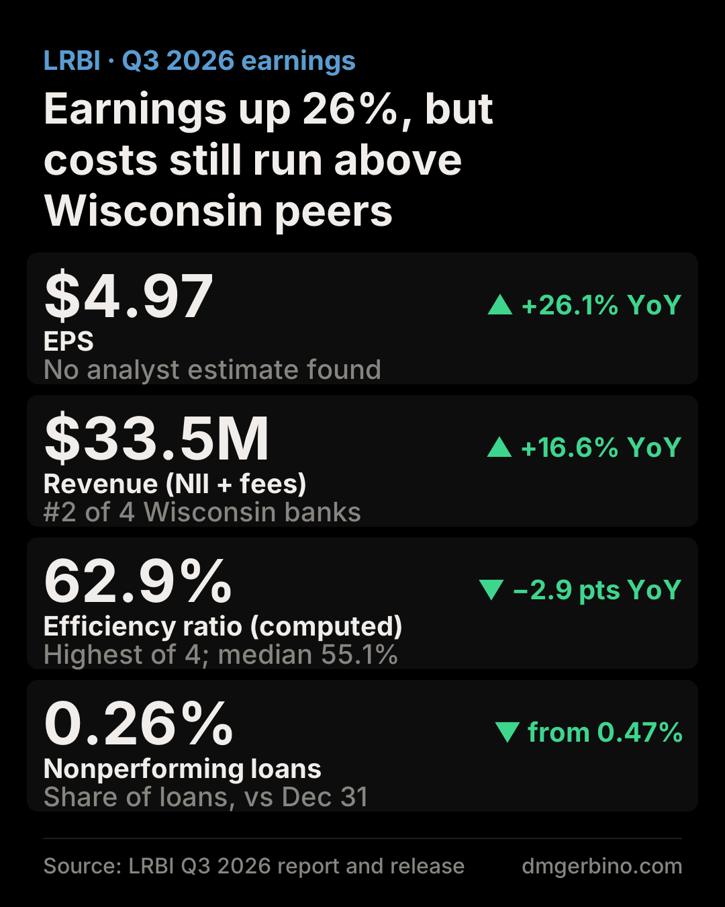
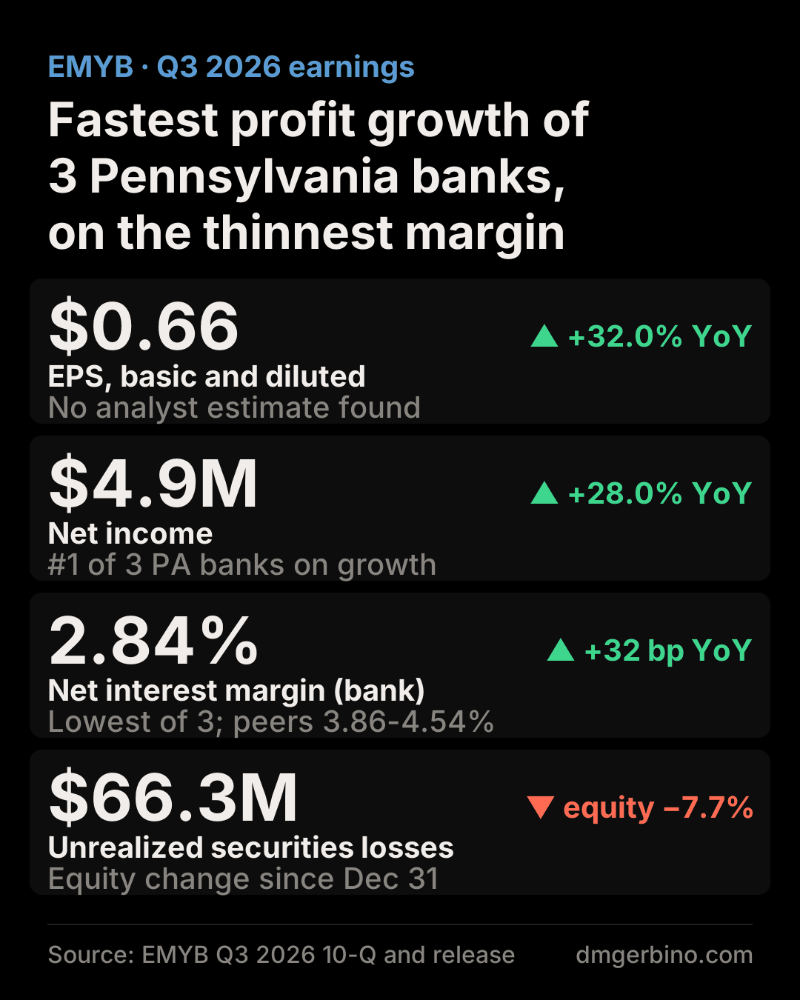
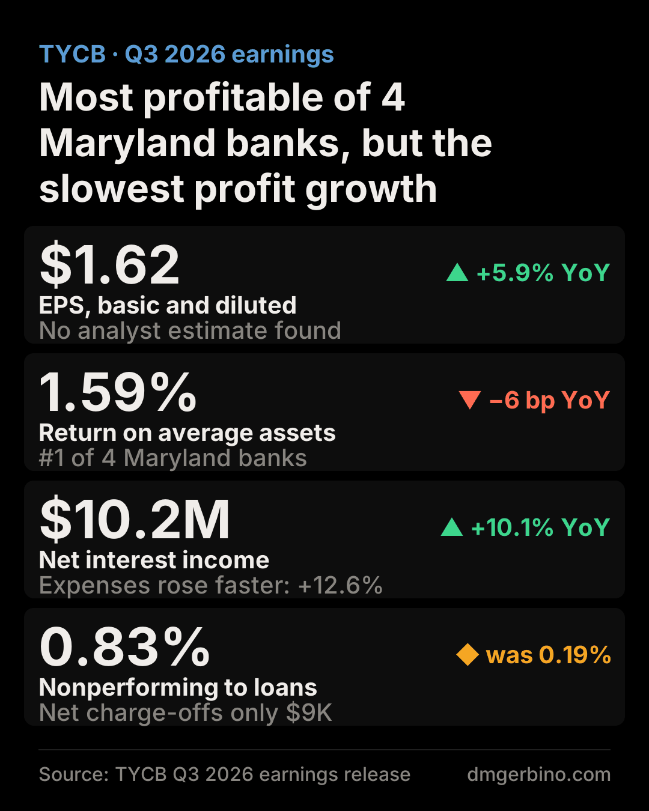
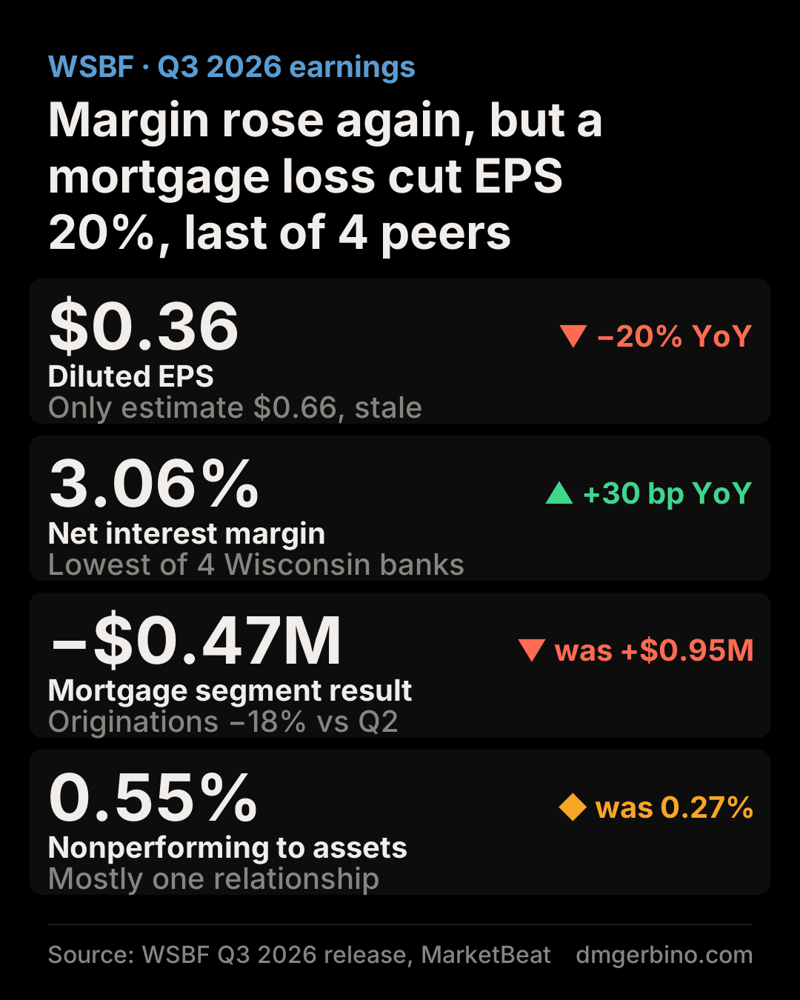
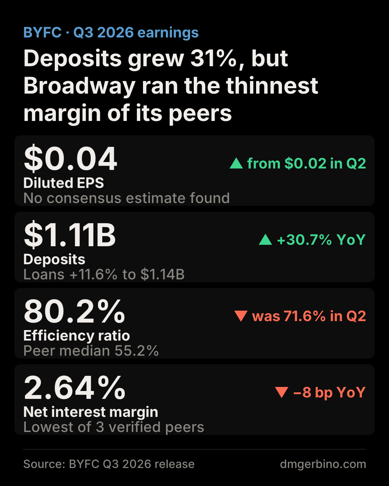
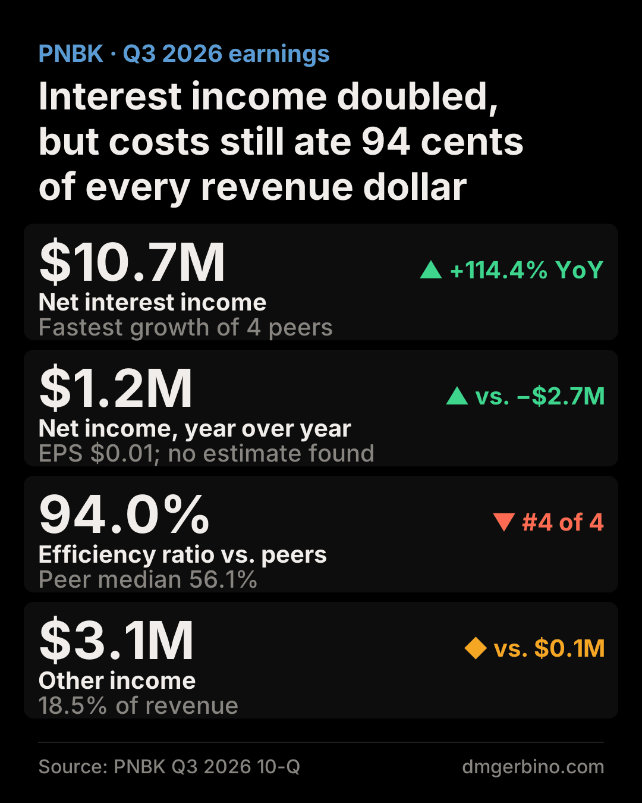
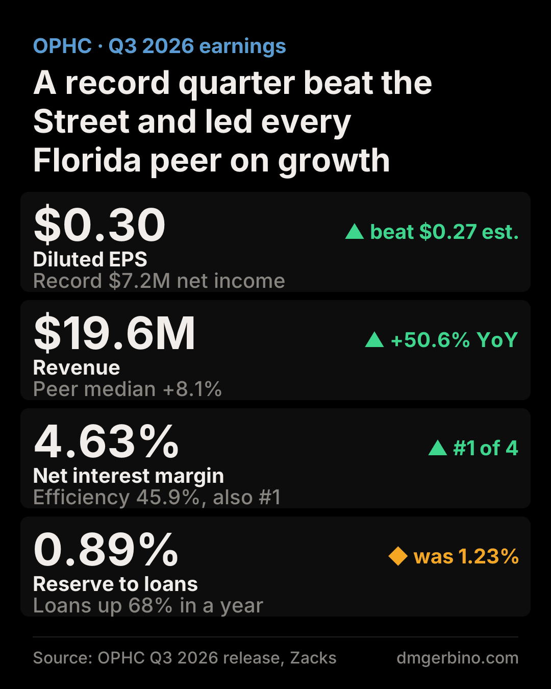
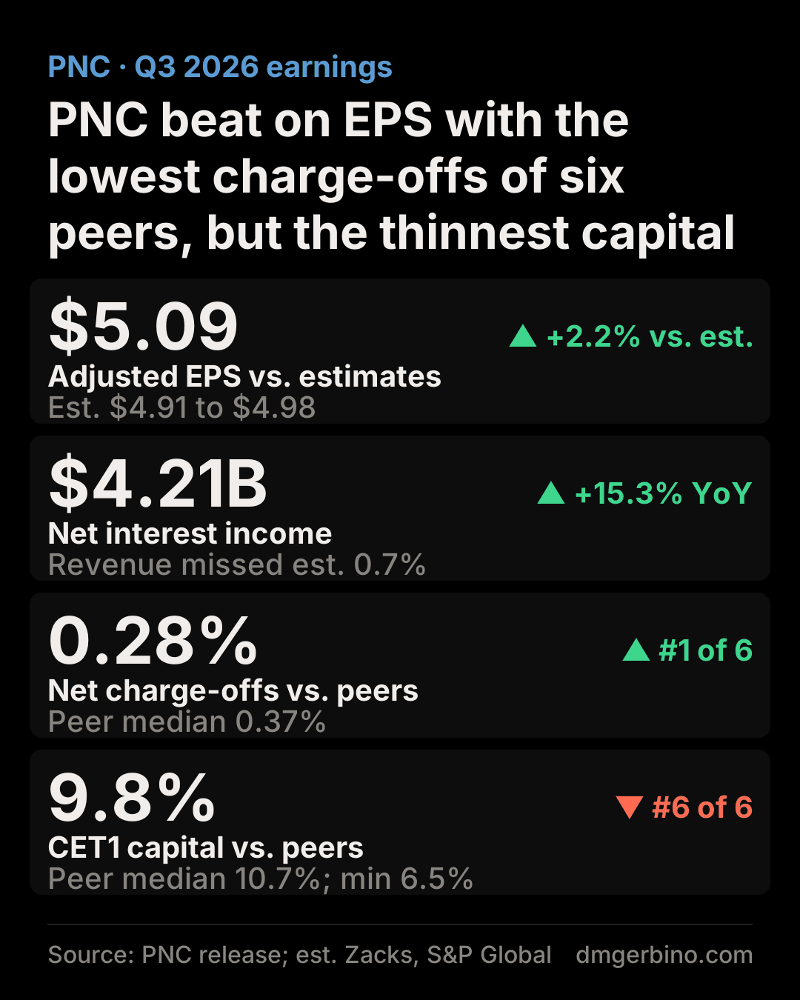

Bank Earnings Reports
Quarterly results from U.S. banks. Each report compares the quarter with estimates and peers, with an infographic and a short narrated video. Newest first.

Lake Ridge Bancorp LRBIQ3 2026 · released Nov 17, 2026Lake Ridge grew earnings 26% as revenue outran costs, but it still spends more per dollar than its Wisconsin peers
Embassy Bancorp EMYBQ3 2026 · released Nov 17, 2026Embassy grew profit fastest of three Pennsylvania banks, but its margin is still the thinnest
Calvin B. Taylor Bankshares TYCBQ3 2026 · released Nov 17, 2026Calvin B. Taylor was the most profitable of four Maryland banks, but grew profit the least as costs rose 12.6% and problem loans climbed
Waterstone Financial WSBFQ3 2026 · released Nov 13, 2026The margin rose a fifth straight quarter, but a mortgage loss cut EPS 20% and left Waterstone last of four Wisconsin peers
Broadway Financial BYFCQ3 2026 · released Nov 13, 2026Deposits grew 31% in a year, but Broadway had the thinnest margin and second-highest cost ratio among similar-size peers
Patriot National Bancorp PNBKQ3 2026 · released Nov 12, 2026Net interest income more than doubled, but expenses still ate 94 cents of every revenue dollar
OptimumBank Holdings OPHCQ3 2026 · released Nov 12, 2026Record quarter beat the Street, and OPHC led every Florida peer on growth, margin and efficiency
PNC Financial Services Group PNCQ3 2026 · released Oct 15, 2026PNC beat on EPS with the lowest charge-offs of six super-regional peers, but it carries the thinnest capital